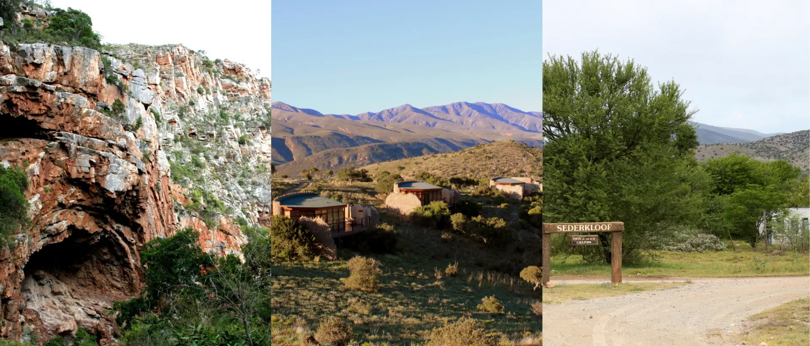
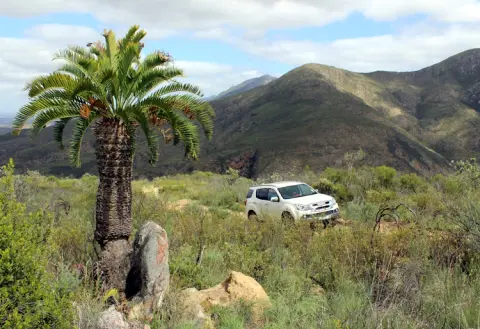

Get in Touch
Questions about your stay, or ready to book? We’d love to hear from you.
Your Dream Wilderness Escape Starts Here
Sederkloof Lodge offers a truly unique getaway for travelers looking to immerse themselves in nature without compromising on comfort. Whether you’re planning a romantic retreat, an adventurous escape, or a rejuvenating break, our team is dedicated to making your stay unforgettable.
- Phone+27 87 700 4334
- BookingsBook online via NightsBridge
- LocationBaviaanskloof Nature Reserve,
Eastern Cape, South Africa

Getting to Sederkloof Lodge
Getting to Sederkloof isn’t just about reaching your destination, it’s about sinking into the landscapes along the way. Whether you’re coming from Port Elizabeth (around 3.5 hours) or George (about 3 hours), the drive offers winding gravel roads, changing scenery, and the kind of views that make you pull over just to take it in.
Most of the year, a 2WD vehicle is totally fine, but after heavy rains, the gravel can get slippery. Always check ahead. Be sure to fill up your tank at Willowmore or Patensie, as there are no petrol stations beyond that.
While you’re on the road, take time to stop at the entrance of the Baviaanskloof mega-reserve, enjoy the stunning views at Bergplaas lookout, and grab some padkos at a Karoo farm stall. Download your route for offline use, pack snacks, and allow extra time. The road to Sederkloof is part of the magic.